(1U) Om mig
- Navn: Andreas Hussain Sarantaris
- Alder: 30 år
- Kandidatgrad: Civilingeniør (cand. polyt.) fra DTU
Tidligere stillinger
- Studiementor (SPS): Hjælper en Maskinteknik-studerende med ADHD med at organisere, planlægge og gennemføre kurser
- Hjælpelærer: Videregående lineær algebra, Matematik 2, Modellering og Programmering, Dynamik, Mekanik, Lektiecafé
Uddannelsesretninger
| Periode * | Uddannelse | Indhold / Specialisering | Udvalgte kurser |
|---|---|---|---|
| E22 - F25 | M.Sc. Matematisk Modellering og Computing | Dynamiske Systemer Scientific Computing |
Computergrafik Digitale læringsteknologier Grafteori |
| F20 - F22 | B.Sc. Matematik og Teknologi (Nu Anvendt Matematik) |
Matematisk modellering Numeriske algoritmer |
Billedanalyse Diskret matematik |
| E18 - E19 | B.Sc. Softwareteknologi | Softwareudvikling Algoritmik |
Algoritmer og datastrukturer Kunstig Intelligens |
| F16 - E17 | B.Eng. Maskinteknik | Konstruktion og design Energiteknik Materialer og fremstilling |
Mekatronik og robotsystemer Modellering og programmering Anvendt reguleringsteknik |
(1U) Maskinteknik - B.Eng.
Overblik
Studie hvor man lærer at designe, bygge og teste mekaniske produkter og konstruktioner.
Kurser med programmering
- Projekt: Regulering af temperaturen i et rum ved brug af en reguleringsalgoritme der bestemmer hvor meget strøm der skal tilføjes over tid til et varmelegeme.
- Programmering: Script-baseret programmering i MATLAB og blok-baseret programmering i Simulink.
- Figur: Reguleringskonstanterne er ved deres kritiske værdi hvor temperaturen svinger. Hvis de ændres en smule kunne systemet blive ustabilt og svingningerne ville blive større og større.
- Projekt: Design, konstruktion og programmering af en 2-leds robot-arm med en rotérbar bundplade der skal kunne løfte en kop.
- Programmering: PLC-programmering med ladder-digrammer.
- Studieskift: Her jeg fik interesse for at programmere og skiftede studie.
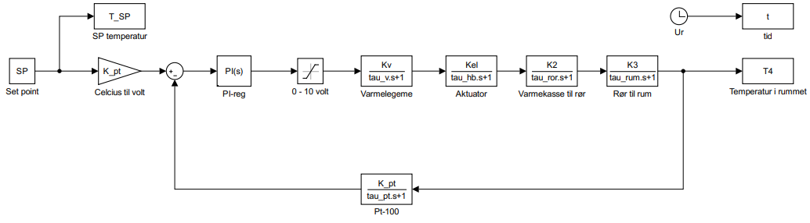
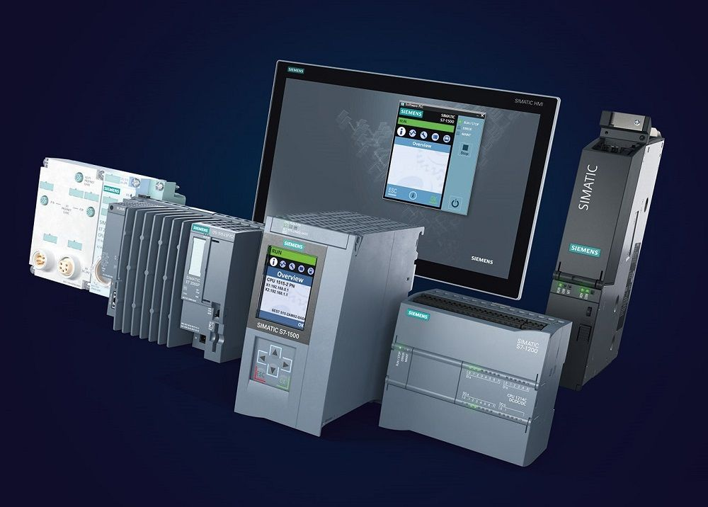
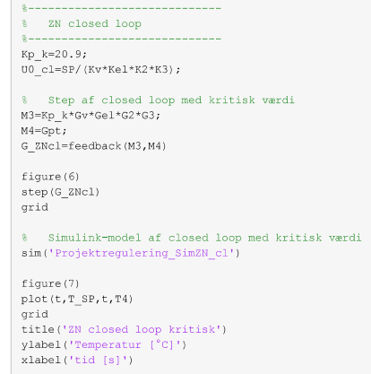
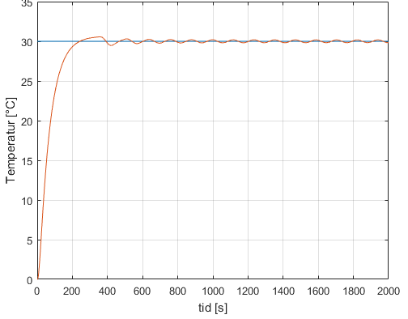
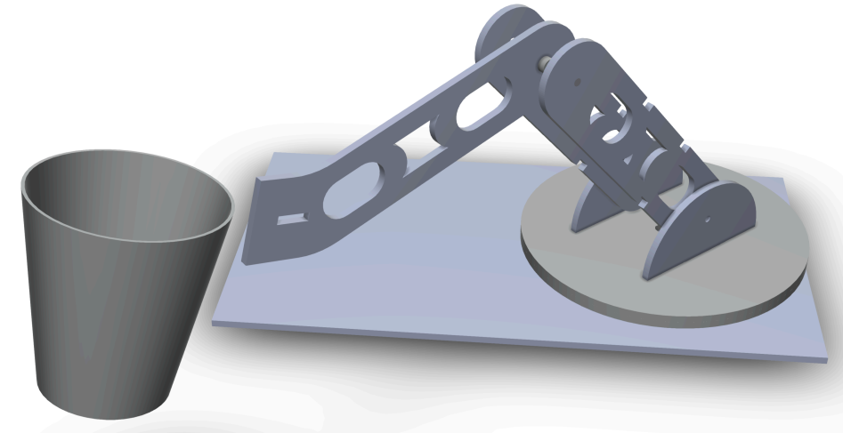
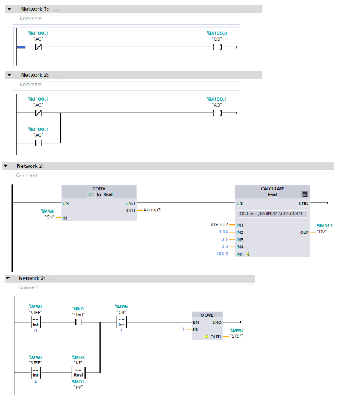
(1U) Softwareteknologi - B.Sc.
Overblik
Studie hvor man lærer at designe, implementere og teste softwareprogrammer og systemer.
Valgfag
Introduktion til Kunstig Intelligens
- Projekt: Design og implementering af et online Othello program med en AI modstander.
- Programmeringssprog: HTML, CSS og JavaScript.
- AI-algoritmer: Minmax algoritme med alpha-beta pruning og en søgedybde på 2 til at bestemme det bedste træk (figur 1), samt Monte-Carlo tree search (figur 2) der eksempelvis blev brugt af AlphaGo imod professionelle Go-spillere.*
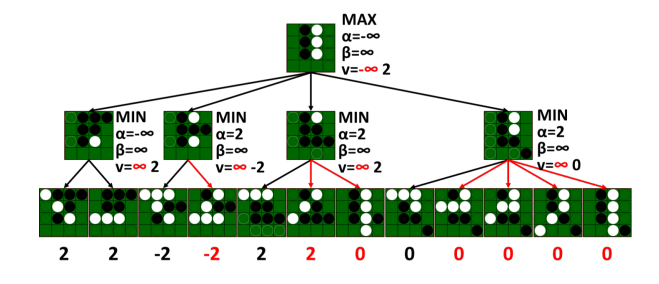
Figur 1: Game-tree for minmax algoritmen i et simpelt tilfælde
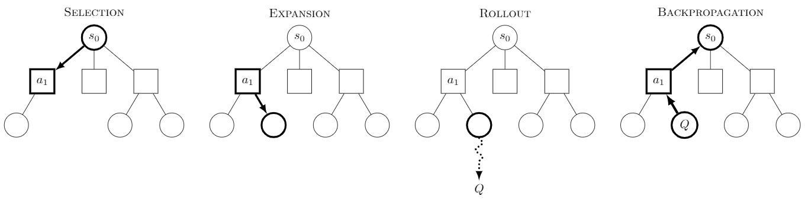
Figur 2: Monte-Carlo tree search [Wikipedia / Monte_Carlo_tree_search]
* Lee Sedol fra dokumentaren om AlphaGo: "losing to AI, in a sense, meant my entire world was collapsing. ... I could no longer enjoy the game. So I retired." [Wikipedia / Lee_Sedol]
(1U) Matematik og Teknologi - B.Sc.
Overblik
Studie hvor man lærer at designe, implementere og analysere matematiske modeller og beregningsalgoritmer.
- Kurser med programmering: Numeriske Algoritmer, Optimering og Datafitting, Matematisk Modellering, Programmering af Matematisk Software.
- Jobmuligheder: Dataanalyse, maskinlæring*, operationsanalyse.
Valgfag
Billedanalyse
- Formål: Analysere billeders data for at finde og klassificere objekter og materialer.
- Programmeringssprog: Python / MATLAB.
- Algoritmer: Matematiske og statistiske algoritmer for filtrering og klassificering.
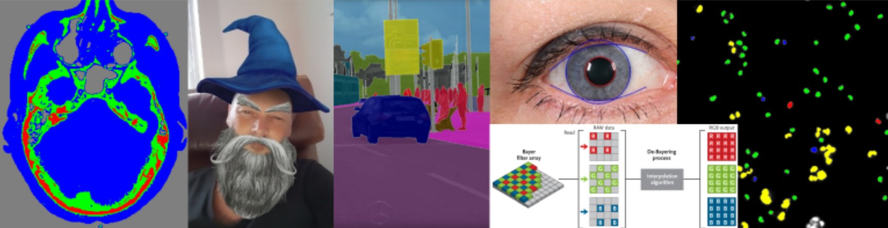
* Mange relevante jobopslag efterspørger nogen med erfaring indenfor maskinlæring.
(1U) Matematisk Modellering og Computing - M.Sc.
Dynamiske systemer
- Differentialigningssystem: dx/dt = f(x), hvor x er en vektor og f(x) er en ulineær vektorfunktion.
- Metode: Analyse af (ulineære) differentialligningssystemer der ikke kan løses eksakt.
- Matematiske begreber: Ligevægtpunkter, stabilitet, svingninger/periodiske banekurve og kaos.
- Bifurkationer: Parameterværdier hvor systemet ændrer sig kvalitativt

Eksempler
- Video 1: Predator-prey model.
- Video 2: En kaotisk banekurve i Rössler-systemet.
- Video 3: Bifurkationer i Rössler-systemet.


(1U) Afgangsprojekter - Tropisk Dynamik
Bachelorprojekt
- Emne: Transformation af ulineære dynamiske systemer i 2D til stykkevist konstante systemer der kan løses eksakt.
- Oprindelse: Metoden kaldes "Tropisk Dynamik" og stammer fra et underfelt i algebraisk geometri kaldet "Tropisk Geometri".
- MATLAB toolbox: Tropical Dynamics Toolbox.

Figur 1. Graf-repræsentation (venstre) og monomie-repæsentation af vektorfeltet.
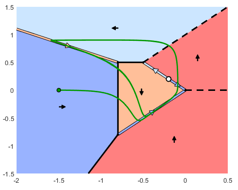
Figur 2. En periodisk banekurve (grøn) i Autocatalator-systemet, og dets tropiske vektorfelt.
Artikel
- Udgivelse: K.U. Kristiansen & A.H. Sarantaris: Tropicalization of Planar Polynomial ODEs - Journal of Differential Equations
- Hovedsætning: Der er kun endeligt mange “generiske” kvalitativt ækvivalente faseportrætter af tropiske dynamiske systemer.
- Relevans: Hilbert's 16. problem spørger om der er en grænse for hvor mange periodiske banekurver et 2D dynamisk system kan have.
Speciale
- Emne: Generalisering af metoden og MATLAB-programmet fra 2D til 3D, samt mere komplicerede bifurkationer og kaotisk dynamik.
- Fremtidigt arbejde: Generalisering af metoden og programmet til N-dimensioner da virkelige systemer ofte er højdimensionelle (skal migreres til programmeringssproget Julia der er bedre egnet til det).
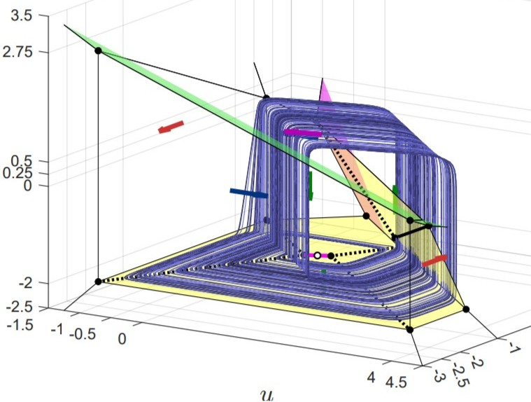
Figur 3. Simuleret banekurve (blå) for et kaotisk system samt dets tropiske vektorfelt.
(1U) Egne Projekter
| Periode | Projekt | Beskrivelse | Programmering |
|---|---|---|---|
| F26-nu |
Hjemmeside til brugtbilsforhandler
|
Udvikler en hjemmeside til en ven der eksporterer brugte biler fra Sydkorea til Europa og Mellemøsten. | HTML + CSS + JS Hele hjemmesiden blev oprettet af en AI kode agent og derefter har jeg ændret i koden. |
| E22 |
Interaktiv punktkonfiguration med dets øvre konvekse hylster
|
Udviklet i computer grafik-kurset for at visualisere de geometriske objekter fra mit bachelorprojekt. | WebGL (JavaScript API) |
| E20-F21 |
Koranen online
|
Hjemmeside til at læse og lytte til Koranen med forskellige oversættelser af versene samt ord-for-ord oversættelse. | HTML + CSS + JS Henter data fra en API. |
| E19 |
Mastermind spil
|
Et lille spil-projekt | HTML + CSS + JS |
| F18 |
Online formelsamling
|
Til Gymnasieelever og DTU studerende | HTML + CSS + JS Lavede den oprindeligt som en app ved brug af cross-platform framework'et Flutter i programmeringssproget Dart. |
(1Ø) Introducér jer selv
Navnerunde
-
Navn:
Sig jeres navn.
-
Programmeringserfaring:
Fortæl hvor meget erfaring I har med programmering udover fra gymnasiet.
-
Motivation:
Fortæl hvorfor I har valgt Programmering B og hvad I tænker I vil bruge programmering til efter gymnasiet.
-
Læringsmål:
Fortæl hvad I håber at lære her i Programmering B.
-
Interesser:
Fortæl gerne om andre interesser, eller hvilke andre fag I interesserer jer for.
(2U) Fagets identitet og formål
1.1 Identitet
- Programmering omfatter de metoder og teknikker der anvendes til udvikling af it-systemer.
- Faget er et teknisk og kreativt fag med vægt på eksperimentelle og innovative processer, der sætter eleven i stand til at bruge programmering til at skabe løsninger på problemer inden for mange forskellige fagområder.
- Derudover er faget et videns- og kundskabsfag som med de teknisk- og kreative sider gensidigt betinger hinanden og sikrer faglig dybde.
- Faget har en betydelig praktisk dimension, der omhandler arbejde med større it-systemer og programmering af teknologiske løsninger baseret på forskellige programmerbare enheder.
1.2 Formål
- Formålet med faget er at give en bred og nuanceret introduktion til programmering, herunder at illustrere brug af programmering med henblik på at tilfredsstille personlig nysgerrighed, til kreativt udtryk, til at skabe ny viden og til at løse problemer (til hjælp for mennesker, organisationer og samfund).
- Faget bidrager til elevernes almendannelse og studiekompetence ved at udvikle evnen til logisk, systematisk og kreativ tankegang og ved at udvikle særlige programmeringsorienterede it-færdigheder, der kan anvendes inden for andre fagområder i uddannelsen og i videreuddannelsessammenhæng.
- Gennem arbejdet med faget opnår eleverne kompetence til at kunne undersøge og beskrive processer og behandle data og informationer ved hjælp af programmering.
- Faget understøtter elevernes muligheder for at agere i den globale højteknologiske verden. Faget giver eleverne viden om, hvordan it-systemer udvikles, og om it-systemers potentialer for løsninger af globale, nationale og lokale problemstillinger.
(2U) Faglige mål og fagligt indhold
2.1 Faglige mål
Eleverne skal kunne:
- bruge programmering til at undersøge et emne eller problemområde, med henblik på - via programmets funktion - at skabe ny indsigt eller til at løse et problem
- behandle problemstillinger i samspil med andre fag
- anvende avancerede konstruktioner i et programmeringssprog
- redegøre for arkitekturen af programmer på forskellige abstraktionsniveauer, herunder relationen mellem brug og funktion
- redegøre for simple specifikationsmodeller og realisere disse i simple velstrukturerede programmer samt teste disse
- rette, tilpasse og udvide avancerede programmer
- demonstrere viden om fagets identitet og metoder
- arbejde inkrementelt og systematisk i programmeringsprocessen
2.2 Kernestof
Gennem kernestoffet skal eleverne opnå faglig fordybelse, viden og kundskaber.
Kernestoffet er:
- programmeringssprog og elementer i programmers opbygning, herunder variabler, typer, udtryk, kontrolstrukturer, parametrisering/abstraktionsmekanismer, rekursion, polymorfi og algoritmemønstre
- arkitekturen for programmers interaktion med omgivelserne med henblik på hændelsesstyret interaktion og interaktion mellem systemer
- generiske programdele og biblioteksmoduler
- arbejdsgange og systematik i programmeringsprocessen, herunder test og fejlfinding
- abstrakte programmeringsbeskrivelser og dokumentation
(2Ø) Opsummér og evaluér Programmering C
Opsummering
- Giv et kort overblik over Programmering C.
Hvilke forløb og projekter har I været igennem, og hvad har I lært? Nævn alt I kan huske også det som I ikke kan huske så godt.
- Hvad brugte I som udviklingsmiljø?
En IDE eller en simpel tekst editor og terminalen?
-
Hvor meget af læreplanen for Programmering B føler I at I har været igennem?
Hvilke af punkterne har I styr på og hvilke vil I gerne have bedre styr på?
Evaluering
-
Hvad synes I om jeres forløb sidste år i Programmering?
Hvad var godt? Hvad kunne gøres bedre?
-
Hvilke projekter synes I var motiverende at arbejde med og hvilke var mindre motiverende?
Hvad fandt I interessant/uinteressant ved dem?
-
Hvad synes I om Python?
Var det til at forstå, og kunne I se at det havde nogle interessante anvendelser?
(3U) Programmeringssprog og Bibliotek vi skal bruge
JavaScript
- Anvendelse: Bruges til hjemmesider, både frontend og backend[1] - Brugbart selv hvis I ikke vil tage en uddannelse indenfor programmering.
- Udbredelse: Et af de mest populære programmeringssprog, og et som mange begynder med.
- Paradigmer: Understøtter både funktionel- og objektorienteret programmering (ligesom Python[2]).

p5.js
- Hvad det er: Et JavaScript-bibliotek der gør det nemt at skabe dynamiske tegninger.
- Anvendelse: Bruges til at skabe animationer, visuel kunst, interaktive visualiseringer og spil.
- Udbredelse: Meget populært for begyndere og undervisere på grund af den lette syntaks, lave læringsbarriere og store online fællesskab.
- Oprindelse: Er oprindeligt skabt som et Java-bibliotek under navnet Processing, men er blevet genfortolket til JavaScript, Python og Android appudvikling.
Inspiration:
OpenProcessing:
Spil:
[1] Atwoods Lov: "Any application that can be written in JavaScript, will eventually be written in JavaScript" [Kilde til citat]
[2] I JavaScript er nedarvning dog prototype-baseret, fremfor klasse-baseret som i Python, selvom klasser også understøttes.
(3U) Forløbsplan for første halve år
| ID | Antal uger | Titel | Indhold |
|---|---|---|---|
| F1 | 2 | Introduktion og repetition | Introduktion til JavaScript, p5.js og VS Code, og repetition af kontrolstrukturer og algoritmik i JavaScript |
| F2 | 1 | Versionskontrol og Git | Introduktion til Git og Github for samarbejde i udviklingsprojekter. |
| F3 | 1 | Udviklingsprocess | Hvordan man på en struktureret måde kan udvikle et softwareprogram i et team for at optimere tidsforbruget, kvaliteten og brugertilfredsheden af programmet. |
| F4 | 1 | Programmering i AI-tidsalderen | Hvilke måder kan man bruge AI til softwareudvikling (vibe coding, prompt engineering), og hvordan I må bruge AI her i Programmering B. |
| F5 | 2 | Afleveringsprojekt 1 - Tegneprogram | I skal udvikle jeres eget tegneprogram i grupper af to ved brug af Git som versionskontrol. |
| F6 | 2 | Rekursion og træer | Algoritmer og datastrukturer |
| F7 | 1 | Objektorienteret programmering i JavaScript | Introduktion til klasser og objekter i JavaScript, herunder JSON-filer. |
| F8 | 1 | Afleveringsprojekt 2 - Vektorbibliotek | I skal udvikle et generisk vektorbibliotek ved brug af OOP der kan bruges af andre, samt teste og dokumentere det. |
| F9 | 4 | Afleveringsprojekt 3 - Floksimulering | I skal udvikle en interaktiv simulator/spil der simulerer flokadfærd hos dyr, hvor I benytter vektorbiblioteket som I lavede i afleveringsprojekt 2. |
| Samlet: | 15 |
(3U) Forløbsplan for andet halve år
| ID | Antal uger | Titel | Indhold |
|---|---|---|---|
| F10 | 1 | Reptition af første halve år | Objektorienteret programmering og JavaScript. |
| F11 | 6 | Webudvikling | Udvikling af interaktive hjemmesider med HTML, CSS og JavaScript. |
| F12 | 8 | Eksamensprojekt | Her skal I arbejde på jeres eksamensprojekt. Mere om eksamensprojektet næste gang. |
| Samlet: | 15 |
(3Ø) Jeres tanker om forløbsplanen og projekterne
Lyder det interessant?
Er der noget I glæder jer mere til end andet?
Noget I synes der mangler?
Etc...
(4U) Udviklingsmiljøer og VS Code
Hvad er en IDE?
- IDE: Integrated Development Environment (Integreret udviklingsmiljø).
- Features:
- Kodeeditor med fejlregistrering og auto-complete mm.
- Forskellige typer terminaler.
- Debugger koblet til kodeeditoren.
- Grafisk display til versionskontrol.
- Integreret AI chat.
- Alternativet: Simpel teksteditor + terminal.
Introduktion til VS Code

(4Ø) Download VS Code og tilføj p5.js
Guide
-
Følg trinene i guiden på p5js.org (husk at scrolle ned til Using VS Code).
Sti: p5js.org -> Tutorials -> Setting up your environment -> Using VS Code
- Tilføj yderligere følgende extensions til VS Code:
Hjælp til VS Code
En kort introduktion til at finde rundt i IDE'en:
(5U) Lektier
1. Dan jer et overblik af p5.js:
- Kig på eksempler i dokumentationen: p5js > Examples, Processing > Examples
- ...find interessante projekter (og lav nogle ændringer!): OpenProcessing > Discover
- ...hvis man er til spil er der nogle gode eksempler her: OpenProcessing > Games
- ...prøv noget af. Hvad end der giver jer motivation og inspiration.
2. Lav en logbog:
- Dokumentér jeres undersøgelser af p5.js projekterne ved at skrive ned hvilke projekter I synes er interessante og hvordan I tænker at man kunne bygge videre på projektene, eller lave sit eget.
- Kan skrives som en markdown-fil (.md) eller word-fil. I behøver dog ikke at bruge markdown-syntaks, men det er godt hvis I gør. I må gerne bruge AI som hjælp (men ikke til at skrive det hele for jer).
- Afleveres senest i morgen klokken 21:00. Skriv en mail til mig hvis I ikke kan nå at aflevere.
3. Download VS Code og tilføj p5.js
- Hvis I har mere tid.
- Følg guiden (gå to slides tilbage).
(5U) Næste lektion
-
Opstart af VS Code og p5.js:
Download VS Code og tilføj p5.js.
-
Praktiske informationer:
Resten af læreplanen, inklusiv eksamensprojektet.
-
Forventningsafstemning:
Mine forventninger til mig selv og til jer
-
Repetition af pensum fra Programmering C i p5.js:
Vi kigger på de processing-eksempler og -projekter som I synes er interessante og ser hvordan de har gjort det.
(5Ø) Lektionen er slut
Læg en plan for hvornår I vil lave lektierne og sæt en påmindelse
... reflektér over det I har lært og saml jeres tanker
... I kan gå når I vil.
Program
| Punkt * | Tidsinterval | Aktivitet | Emner |
|---|---|---|---|
| 1U | 10:00 - 10:10 | Om mig | Indblik I hvad jeg har brugt programmering til og hvad jeg kan lære jer. |
| 1Ø | 10:10 - 10:20 | Om jer | Jeres forudsætninger og interesser. |
| 2U | 10:20 - 11:30 | Læreplan til Programmering B | Fagets identitet, formål og faglige mål. |
| 2Ø | 10:30 - 11:40 | Opsummering og evaluering af Programmering C | Hvad I har lært, hvad I synes der var godt og hvad der kan forbedres. |
| 3U | 10:40 - 11:50 | Studieplan og projekter | Overblik over de foreløbige forløb og projekter, samt tankerne bag. |
| 3Ø | 10:50 - 11:00 | Jeres input til studieplanen og projekterne | Jeres tanker om forløb og projekter, samt ønsker til tilføjelser. |
| 4U | 11:00 - 11:10 | Introduktion til udviklingsmiljøer | Hvad er en IDE, og hvordan kan det hjælpe i udviklingsprocessen? |
| 4Ø | 11:10 - 11:20 | Opstart af VS Code og p5.js | I får rørt ved de værktøjer I skal bruge. |
| 5U | 11:20 - 11:30 | Opsamling, lektier og næste lektion | Hjemmearbejde til næste gang og emnerne for næste lektion. |
| 5Ø | 11:30 - 11:35 | Afrunding | Færdiggør jeres arbejde og saml jeres tanker. |